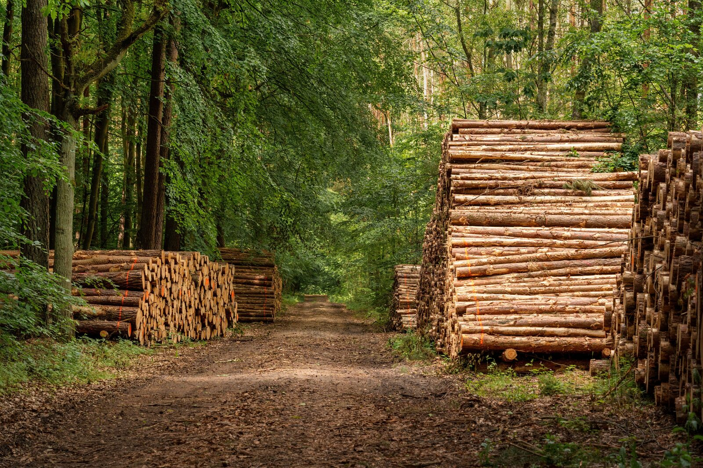
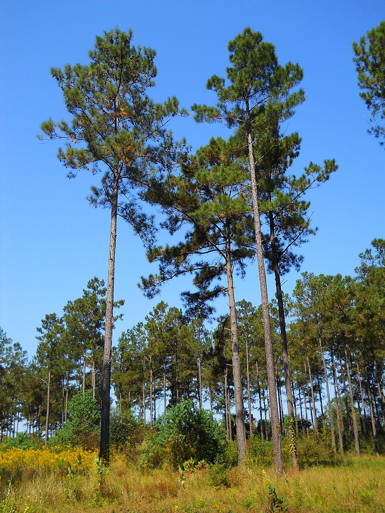

Week 3: Changing the Assumptions
Scenario analysis: what happens when the numbers shift?
Introduction
In the content session, you explored sources of uncertainty and audited the assumptions behind biomass carbon accounting. The headline that biomass emits zero CO₂ rests on a policy choice, not measurement. Does this policy hold water when we examine its assumptions?
Today’s goals:
- Estimate the CO₂ cost of shipping wood pellets across the Atlantic
- Test how sensitive the biomass emissions number is to what you include
- Explore carbon payback: how long does a replanted forest take to win back the CO₂ of the one we burned?
- Follow one year’s electricity through fifty years of atmosphere, from biomass and from gas
- Start your briefing: save a figure and set up
briefing.md
NoteHow these exercises work
The code boxes start empty, except for comments to guide you through the code that’s expected.
Work one comment at a time. If you get stuck:
- Hint 1 restates what you are trying to do.
- Hint 2 sketches the shape the code might take.
- Hint 3 gives you the code with the key pieces blanked out.
- Solution gives you the lot.
Take a real attempt before opening a hint: you will learn by doing, not by reading. The demonstrators are here to help.
Three things worth knowing:
- The boxes share one R session, exactly like a script. Anything you create in Exercise 1 is still there in Exercise 2.
- Variable names are up to you. The last thing your block prints is what gets checked, so end each block with the answer.
- Exercises have extensions underneath them. If you finish early, give them a stab. These are designed to equip you to tackle real coding problems you might face, using the documentation. We can help – but check the manuals first!
TipStuck?
Ask a new question on the Code Q&A discussion board. The discussion board allows anyone else who is stuck on the same thing to learn from (or provide!) the answer. We are notified of new posts, and will reply when we’re next available.
The board is private to this class, so sign in to GitHub first.
NoteComing back to this page?
Your code is kept in this browser. You can Import code you saved using Export all code (page footer).
This code block runs automatically; it loads the data you’ll use today.
Exercise 1: The CO₂ cost of transport
Photo: Lyle Smith, Pexels
The UK’s wood pellets travel thousands of kilometres by ship, mostly from the southeastern United States. Burning them is counted as zero. How much does shipping add?
Work out the total CO₂ released by transporting the UK’s 2024 pellet imports, in millions of tonnes (Mt).
Everything you need is in imports (columns year, origin, import_kt, transport_km) and in the constant shipping_co2_per_tkm, which is 0.005 kg CO₂ per tonne-km.
If the maths feels complicated, start by looking at the units. How would you need to multiply and divide the units of the quantities you start with in order to end up with an answer in Mt?
NoteHint 1
Every tonne of pellets that travels a kilometre releases 0.005 kg of CO₂. So for each origin you need tonnes × kilometres × 0.005, and then you need to add those five numbers together and express the answer in megatonnes.
The hard part is not the multiplication — it is keeping track of which unit you are in at each step.
NoteHint 2
The shape of it:
- Subsetting rows of a data frame by a condition is the
df[condition, ]pattern you used in Week 1. - You can create a new column by assigning to a name that does not exist yet:
df$new_column <- .... Doing it this way — rather than making a loose vector — keeps each number attached to the origin it belongs to, which matters as soon as you want to look at the table. sum()collapses the column to one number.- Then divide to get from kg to Mt.
NoteHint 3
imports_2024 <- imports[imports$______ == 2024, ]
imports_2024$transport_co2_kg <-
imports_2024$import_kt * ______ * # kilotonnes to tonnes
imports_2024$transport_km *
______
sum(imports_2024$______) / ______ # kg to Mt
TipSolution
imports_2024 <- imports[imports$year == 2024, ]
imports_2024$transport_co2_kg <-
imports_2024$import_kt * 1000 *
imports_2024$transport_km *
shipping_co2_per_tkm
sum(imports_2024$transport_co2_kg) / 1e9About 0.25 Mt CO₂ — a quarter of a million tonnes. Is that a big number? Hold that question: shipping turns out to be the smallest of the things the official figure leaves out. The chimney at those same plants releases about 43 Mt (Exercise 2), so transport is under 1 % of the story. It is real, non-zero, and a useful warm-up — but if you were hunting for a big missing number, you have not found it yet.
Quick check
To make the number easier to conceptualize, let’s bring it down to a human scale. How many kilograms of CO₂ does shipping release per tonne of pellets delivered?
(A kilogram’s easy to picture: it’s the mass of a 1 kg bag of flour, or a litre of water. A tonne is the mass of people in a crowded elevator.)
Use your 2024 subset again — total shipping CO₂ divided by total tonnes imported. What sort of context does this comparison give?
NoteHint 1
You already have the total CO₂ in kg from Exercise 1 — it is what you had just before dividing by 1e9. Divide that by the total number of tonnes the UK imported in 2024.
TipSolution
sum(imports_2024$transport_co2_kg) / sum(imports_2024$import_kt * 1000)About 27 kg CO₂ per tonne. The pellet itself releases about 1700 kg when burned. Shipping is a rounding error next to combustion — which is exactly why arguing about shipping is a good way to avoid arguing about combustion.
Extension: would New Zealand be different?
The UK’s pellets come mostly from the American southeast. Suppose the same mix of pellets were burned in a plant in New Zealand instead. Does this big change to shipping distances shift the conclusion?
transport_km won’t help you here: you’ll need to work the distances out yourself. Look up a coordinate for each origin and destination, then compute great-circle distances.
NoteHint 1
maps::world.cities is a data frame with name, country.etc, lat, long and capital. Subsetting to capital == 1 gives roughly one row per country, and the country.etc values for our origins are spelled "USA", "Canada" and "Latvia" — convenient, and also worth being suspicious of.
geosphere::distHaversine() takes two two-column matrices of (longitude, latitude) — note the order, which is the reverse of how we usually say it — and returns metres.
ImportantWhat the extension is coaxing you to think about
The moment you compute a distance yourself, you have to decide what you are measuring. Notice the assumptions that each choice smuggles in:
- A capital city is not a port. Wood pellets leave the USA from Savannah and Baton Rouge, not Washington DC. How far wrong does that put you, and in which direction?
- A great-circle line is not a shipping route. No vessel sails through the isthmus of Panama or across Antarctica. Compare your computed USA–UK distance with the 6200 km in
transport_km: which is larger, and why? EU_otherandOtherhave no coordinates at all. What did you do with them? Dropping them is a decision, not a technicality — whose emissions did you just make disappear?- A longer voyage may be a more efficient one. Emissions per tonne-km vary with vessel size and route. Holding
shipping_co2_per_tkmfixed is itself an assumption.
Write down, in one sentence each, the assumptions you think most affect your answer. Those sentences are the kind of caveat your Week 4 briefing might include — and just the sort of thing a traitor might leave out.
Exercise 2: What’s counted where

Photo: guvo59, Pexels
For traditional fuels, carbon is counted where it is released.
If coal mined in Australia is burned in Germany to generate electricity used in France, then the CO₂ emissions are attributed to Germany. (One convenient route to UK Net Zero is to import all our electricity from carbon-belching plants in other people’s countries!)
Biomass is different. Its CO₂ emissions are counted where a tree is felled. That way, no-one needs to track the fate of each tree’s carbon (released through decay or burning? Locked in a building or landfill?). Counting chimney emissions separately would count the same carbon twice.
factors holds emission estimates under several accounting rules (columns fuel, scenario, co2_kg_per_mwh). Work out the CO₂ that leaves the chimneys of the UK’s biomass power stations in 2025, in Mt: the combustion_only scenario. This number adds ‘zero’ to UK emissions, because the carbon was counted when the trees were felled overseas.
NoteHint 1
Emissions = energy generated × emissions per unit of energy. The factor is per MWh, so the generation has to be in MWh too; the factor is in kg, so the answer starts life in kg.
The fiddly bit is pulling one number out of factors: it has a row for each combination of fuel and scenario, so a single condition will not identify it.
NoteHint 2
The shape of it:
- To pick out one value: subset the
co2_kg_per_mwhcolumn by a condition that isTRUEfor exactly one row. Two conditions joined with&will do it. elechas one row per year, soelec$bioenergy_twh[elec$year == 2025]is the generation.- Then multiply, and divide once at the end to get Mt.
Print each piece as you go.
NoteHint 3
stack_factor <- factors$co2_kg_per_mwh[
factors$fuel == "______" ______
factors$scenario == "______"
]
bio_mwh <- elec$bioenergy_twh[elec$year == ______] * ______
bio_mwh * stack_factor / ______
TipSolution
stack_factor <- factors$co2_kg_per_mwh[
factors$fuel == "biomass" &
factors$scenario == "combustion_only"
]
bio_mwh <- elec$bioenergy_twh[elec$year == 2025] * 1e6
bio_mwh * stack_factor / 1e9About 41.0 Mt CO₂ per year leaves UK chimneys, counted as zero under official rules. For context, the UK’s territorial CO₂ emissions in 2025 were about 285 Mt (DESNZ provisional figures): this rule accounts for roughly 14 % of that.
At the chimney, biomass (1000 kg/MWh) is higher than coal (910): wood carries less energy per unit of carbon, so a megawatt-hour from pellets releases slightly more CO₂. Adding each fuel’s supply chain gives biomass 1060, coal 990 and gas 410. For each fuel, supply chain emissions are similar in magnitude, and they mostly happen outside the UK. What makes biomass attractive is that the chimney CO₂ is booked to the exporter’s forests – and the nice thing about imported pellets is that it’s someone else’s responsibility to ensure that new growth offsets the emissions incurred by felling!
Extension: different ways to pull your data
- You probably pulled one value out of
factorswith[and two conditions. Get the same number without using[at all. There are at least three other routes —subset(),with(),match(); each behaves differently when the conditions fail to match any rows. Which of them warns you, and which hands you a silentNA? This behaviour might lead which function you prefer in different settings. - Produce 2025’s emissions under all three biomass scenarios at once, as a named vector. (
sapply(), or just vectorized arithmetic on the whole column.) elecgoes back to 2000. Underwith_supply_chain, which was the first year that the UK emitted more CO₂ from biomass than from coal?
Exercise 3: The range of defensible answers
Photo: Lauri Põldre, Pexels
“Carbon payback” is the idea that a burned tree’s CO₂ comes back out of the atmosphere as a replacement tree grows in its place. How much has come back depends on how long you wait and what grows back.
To help calculate this, we’ve written a function: a recipe with a name, which takes some inputs (its arguments) and hands back an answer. You are familiar with functions built into R and its libraries (read.csv(), mean(), ggplot()); the setup block at the top of this page loaded one more, fraction_reabsorbed(), from the file data/fraction_reabsorbed.R. Run this to read the file:
The lines starting # are comments, for users; R reads the rest. (Typing a function’s name without brackets, fraction_reabsorbed, also shows its code, but without the comments.)
If you have time, compare R’s f <- function(x) {} syntax for functions with Python’s def f(x):; notice that if an R function does not encounter a return(), it will return the last thing it executes - a bit like the code blocks in this page.
The function takes three arguments:
years: how long after felling and replanting we look;forest: what grows back. One of the forests indata/forest_growth.csv(load it withread.csv()and look);felled_at: how old the trees were when they were cut.
It looks up how much carbon the new stand holds after years, and divides by what the old stand held when it was felled at felled_at.

Loblolly pine. Photo: Woodlot, Wikimedia Commons, CC BY-SA 3.0

3a. Net CO₂ after 20, 40 and 90 years
About three-quarters of the UK’s pellets come from the US (look in imports). We don’t have granular data about which forests they grew in, but many south-eastern US plantations grow loblolly pine, which is usually felled at 25–35 years old.
Take a loblolly plantation felled at 25. Work out the net CO₂ cost of a megawatt-hour of biomass electricity, in kg, 20, 40 and 90 years after felling: the full supply-chain figure (1060 kg/MWh), less the share of the chimney’s 1000 kg/MWh that the new trees have taken back.
NoteHint 1
Call a function by its name, with its arguments in brackets, in the order the recipe lists them: years, then forest, then felled_at. The forest’s name is text, so it goes in quotes.
NoteHint 2
reabsorbed <- fraction_reabsorbed(c(20, 40, 90), "______", ______)
reabsorbed
1060 - ______ * reabsorbed
TipSolution
reabsorbed <- fraction_reabsorbed(c(20, 40, 90), "loblolly_plantation", 25)
reabsorbed
net <- 1060 - 1000 * reabsorbed
netAfter 20 years the new plantation has taken back 82 % of the chimney’s CO₂, leaving 236 kg/MWh: well under gas (410 kg/MWh, supply chain included). By 40 years the figure is negative. The new stand is 40 years old and holds more carbon than the 25-year-old stand we cut, because trees left alone keep growing.
Notice what you had to choose: the forest, and its age at felling. Each moves the answer a long way.
Quick check
Which assumption has the larger effect on the biomass figure: adding the supply chain to the chimney figure, or allowing 20 years of regrowth?
Set answer to 1 if the supply chain matters more, or 2 if regrowth matters more.
3b. The picture
Put every biomass answer side by side: the official zero, the chimney alone, the full supply chain, and your three regrowth figures. Draw gas’s figure (410 kg/MWh, supply chain included) as a reference line: “is that a big number” requires a “compared to what?”
NoteHint 1
data.frame() builds a table from columns of equal length: here, six labels and six numbers. If net from 3a has gone, rebuild it first.
ggplot orders a character axis alphabetically, which here is meaningless. Converting the column to a factor and setting its levels in the order you want fixes that, because ggplot respects factor level order.
For the reference line, you want a horizontal line at a fixed y value. ggplot2 has a geom for exactly this.
NoteHint 2
The shape of it:
order(x)returns the positions that would sortx, socolumn[order(other_column)]gives you the level order you want.geom_col()draws bars whose heights are the y values.geom_hline(yintercept = ...)draws the reference line.labs()sets titles and axis labels, andtheme(axis.text.x = element_text(angle = 45, hjust = 1))rotates the tick labels.
NoteHint 3
answers <- data.frame(
label = c("Official", "Chimney only", "Full supply chain",
"Regrown 20 yr", "Regrown 40 yr", "Regrown 90 yr"),
co2_kg_per_mwh = c(0, 1000, 1060, ______)
)
answers$label <- factor(
answers$label,
levels = answers$label[______(answers$co2_kg_per_mwh)]
)
ggplot(answers, aes(x = label, y = ______)) +
geom_col() +
geom_hline(yintercept = ______, linetype = "dashed") +
labs(x = NULL,
y = expression(CO[2] ~ "(kg per MWh)"),
title = expression("Biomass" ~ CO[2] * ": the answer depends on the question")) +
theme(axis.text.x = element_text(angle = 45, hjust = 1))
TipSolution
net <- 1060 - 1000 *
fraction_reabsorbed(c(20, 40, 90), "loblolly_plantation", 25)
answers <- data.frame(
label = c("Official", "Chimney only", "Full supply chain",
"Regrown 20 yr", "Regrown 40 yr", "Regrown 90 yr"),
co2_kg_per_mwh = c(0, 1000, 1060, net)
)
answers$label <- factor(
answers$label,
levels = answers$label[order(answers$co2_kg_per_mwh)]
)
ggplot(answers, aes(x = label, y = co2_kg_per_mwh)) +
geom_col() +
geom_hline(yintercept = 410, linetype = "dashed") +
labs(x = NULL,
y = expression(CO[2] ~ "(kg per MWh)"),
title = expression("Biomass" ~ CO[2] * ": the answer depends on the question")) +
theme(axis.text.x = element_text(angle = 45, hjust = 1))The range runs from −56 to 1060 kg/MWh. With no regrowth, biomass is two and a half times dirtier than gas; after 20 years of regrowth it is cleaner; after 40, it is apparently drawing carbon out of the air. Which bar you quote depends on what question you’re answering and what timescale you care about, and the choice spans the whole distance from “worse than gas” to “better than nothing at all.”
The dashed line is what makes the chart argue rather than merely display: without it, 1060 is just the tallest bar.
Extension: choose your forest
- Swap the plantation for
"loblolly_average"felled at 35, then for"sitka_spruce"felled at 40. Which forest gives biomass its most / least flattering 20-year figure? - Felling age is a choice too. Fell the plantation at 15 instead of 25. What happens to the 20-year figure, and why? (What does the function divide by?)
- Ask for 100 years. What comes back, and why is that preferable to a number?
- Colour each bar by whether it sits above or below the gas line.
Exercise 4: It takes time
So far every figure has assumed a steady state. But a replanted forest takes decades to regrow: if I fell a tree to make electricity today, how long does it take before I’m back to carbon neutrality?
Let’s generate 41 TWh (about what the UK will generate from biomass this year) and follow the resultant CO₂ over the coming fifty years.
Step 1: Gas
First up, let’s generate the 41 TWh from gas. How much extra CO₂ is in the atmosphere (yes, pedant, and the oceans too) in each of years 0 to 50, in Mt? Store it as gas, and plot it.
NoteHint 1
Nothing is added after year 0, and nothing is taken away, so the same number repeats 51 times: rep() does that. The number is year 0’s emissions, worked out as in Exercise 2, but with gas’s emission factor. Which of gas’s two rows in factors is a fair comparison with biomass’s full supply chain?
NoteHint 2
years <- 0:50
pulse_mwh <- 41 * 1e6
gas_factor <- factors$co2_kg_per_mwh[
factors$fuel == "gas" & factors$scenario == "______"
]
gas <- rep(pulse_mwh * gas_factor / ______, length(years))
scenarios <- data.frame(year = years, gas = gas)
ggplot(scenarios, aes(x = year)) +
geom_line(aes(y = ______, colour = "Gas"))
TipSolution
years <- 0:50
pulse_mwh <- 41 * 1e6
gas_factor <- factors$co2_kg_per_mwh[
factors$fuel == "gas" & factors$scenario == "with_supply_chain"
]
gas <- rep(pulse_mwh * gas_factor / 1e9, length(years))
scenarios <- data.frame(year = years, gas = gas)
ggplot(scenarios, aes(x = year)) +
geom_line(aes(y = gas, colour = "Gas")) +
labs(x = "Years after generation",
y = expression("Extra" ~ CO[2] ~ "in the atmosphere (Mt)"),
colour = NULL)Putting colour = "Gas" inside aes() names the line, and ggplot builds a legend from the names. Each new line gets its own name.
Step 2: Biomass, no regrowth
Now make the same 41 TWh from biomass. In year 0 we fell the trees, make pellets, ship them and burn them. First assume that nothing grows back. Create the variable biomass to record the extra CO₂ that is in the atmosphere each year. Add it to scenarios, and add a line to the chart.
NoteHint 1
This is Step 1 again with biomass’s factor. scenarios$biomass <- biomass adds a column, and each geom_line() in a chart draws one line.
TipSolution
bio_factor <- factors$co2_kg_per_mwh[
factors$fuel == "biomass" & factors$scenario == "with_supply_chain"
]
biomass <- rep(pulse_mwh * bio_factor / 1e9, length(years))
scenarios$biomass <- biomass
ggplot(scenarios, aes(x = year)) +
geom_line(aes(y = gas, colour = "Gas")) +
geom_line(aes(y = biomass, colour = "Biomass, no regrowth")) +
labs(x = "Years after generation",
y = expression("Extra" ~ CO[2] ~ "in the atmosphere (Mt)"),
colour = NULL)Step 3: Replant
Now let the forest back in. We fell and burn the trees in year 0, as before, then replant the land with loblolly pine. Each year the new trees take back a little more of the chimney’s CO₂; fraction_reabsorbed() tells you what fraction. Store the result as replanted and add its line. A horizontal line at zero will help.
NoteHint 1
Of biomass’s 1060 kg/MWh, 1000 came out of the chimney: that is the carbon the trees held. The other 60 came from the supply chain: we’d need to plant more trees than we harvested if we wanted to soak that up too.
fraction_reabsorbed() will happily take all 51 years at once.
NoteHint 2
chimney <- pulse_mwh * 1000 / 1e9
replanted <- biomass - chimney *
fraction_reabsorbed(______, "loblolly_plantation", ______)
TipSolution
chimney <- pulse_mwh * 1000 / 1e9
replanted <- biomass - chimney *
fraction_reabsorbed(years, "loblolly_plantation", 25)
scenarios$replanted <- replanted
ggplot(scenarios, aes(x = year)) +
geom_hline(yintercept = 0, colour = "grey50") +
geom_line(aes(y = gas, colour = "Gas")) +
geom_line(aes(y = biomass, colour = "Biomass, no regrowth")) +
geom_line(aes(y = replanted, colour = "Biomass, replanted")) +
labs(x = "Years after generation",
y = expression("Extra" ~ CO[2] ~ "in the atmosphere (Mt)"),
colour = NULL)Quick check
In which year does the replanted line first drop below zero?
What should we do then? In year 29 the new plantation holds all the carbon we burned. Should we fell it and burn it again? Leave it standing? Sell its future growth as a carbon credit? The line goes on falling below zero: is biomass entitled to that? Decide with your desk before you go on.
Step 4: What would the trees have done anyway?
Our gas line assumes that, had we burned gas, the plantation would have stood frozen in time. But the 25-year-old pines would otherwise have gone on growing, drawing down carbon that they never get the chance to in the biomass scenario. That growth belongs on the gas side of the ledger.
After years more, the standing plantation is 25 + years old. fraction_reabsorbed(25 + years, "loblolly_plantation", 25) compares it with the stand at 25: anything above 1 is extra growth. Make a new vector gas_standing that subtracts this extra growth from the gas emissions, and add its line.
NoteHint 1
At 1, the standing stand holds what it held at 25, which is all the carbon we’d have burned: chimney. Above 1, the excess is new growth. So the extra uptake is chimney times (fraction − 1).
NoteHint 2
extra_growth <- chimney *
(fraction_reabsorbed(______ + years, "loblolly_plantation", 25) - ______)
gas_standing <- gas - extra_growth
TipSolution
extra_growth <- chimney *
(fraction_reabsorbed(25 + years, "loblolly_plantation", 25) - 1)
gas_standing <- gas - extra_growth
scenarios$gas_standing <- gas_standing
ggplot(scenarios, aes(x = year)) +
geom_hline(yintercept = 0, colour = "grey50") +
geom_line(aes(y = gas, colour = "Gas")) +
geom_line(aes(y = gas_standing, colour = "Gas, pines left standing")) +
geom_line(aes(y = biomass, colour = "Biomass, no regrowth")) +
geom_line(aes(y = replanted, colour = "Biomass, replanted")) +
labs(x = "Years after generation",
y = expression("Extra" ~ CO[2] ~ "in the atmosphere (Mt)"),
colour = NULL)Biomass drops below gas-with-standing-pines in year 19 (years[replanted < gas_standing][1]), two years later than against plain gas. For a fast plantation felled near its peak, that’s before 2050, though not by much.
Now look back at Step 3. Below zero, the replanted line was banking growth that the standing plantation also does. If biomass claims that growth, gas should claim it too; and once both do, the line to beat is gas_standing, not zero.
Quick check
Rerun Steps 3 and 4 for "loblolly_average", an ordinary stand felled at 35 (change the 25s to 35). In which year does biomass drop below gas_standing now? Enter 0 if it never does within 50 years.
(Make sure you don’t miss any 25s! Defining a well-named variable (perhaps felling_age <- 25) makes your code more readable, and means you only have to change a single line of code. Unexplained numbers are bad coding practice: when you come back to your code, will you remember where the 25 came from?)
Extension: interrogate the sketch
- Try
"sitka_spruce"felled at 40. Does biomass ever beat gas with the spruce left standing? - Fell the plantation young, at 15. When does biomass beat plain gas, and when gas with the pines left standing? Which comparison would an advocate for biomass quote?
- Mark 2050 on the chart (24 years after a 2026 burn) without using
geom_point(). (Try:?geom_vline,?annotate) - Mapping a line to
colouralone fails the 1 in 12 men with some degree of colour-vision deficiency. Maplinetypetoo. - A power station burns every year, not once. How would you add up 25 years of pulses, each starting a year later than the last?
Start your briefing
Drax Power Station’s subsidy contract ends in 2031, and the government has to decide what happens next. Your briefing advises a minister to do one of three things:
- Biomass: keep subsidising Drax to burn biomass.
- Coal: encourage Drax to return to coal.
- Close: withdraw support and let Drax close.
Whichever you pick, ask whether the numbers add up: can we continue to generate enough electricity whilst maintaining our target of net-zero CO₂ by 2050? drax_generation.csv has Drax’s own output since 2009.
Maximum 800 words, written in Markdown: plain text with a few symbols for formatting, which GitHub shows as a formatted page with its figures. That is how your reviewers will read it. Deadline: noon on the Thursday of Week 4. Get everything set up today, so you are ready to write in your own time.
Your drax repo
The briefing has a repository of its own, geol-skills-drax-yourname, which already holds a template briefing.md, a figures folder and the data. Access the repo by accepting the drax assignment.
In GitHub Desktop, File → Clone repository, choose geol-skills-drax-yourname and clone it next to your biomass repo. From now on you have two repos. The Current repository button at the top left of GitHub Desktop says which one you’re working in, and switches between them. Check it before every commit.
Folders and paths
Each repo is a folder on your computer, and a folder can hold other folders:
geol-skills-drax-you/
├── briefing.md
├── data/
│ └── drax_generation.csv
└── figures/
├── payback-scenarios.R
└── payback-scenarios.pngA path says how to reach a file. An absolute path starts from the top of the drive, such as C:\Users\you\Documents\GitHub\geol-skills-drax-you\figures\payback-scenarios.png, and works only on your computer. A relative path starts from where you are: from briefing.md, the figure is figures/payback-scenarios.png. That one still works when the repo is on github.com or on your reviewer’s computer, so always use relative paths, with /.
Capitals count (Figures/ is a different folder), and spaces in names cause trouble, so use -. You’ve used a relative path since Week 1: read.csv("data/uk_electricity.csv").
Step 1: Save a figure
Pick the figure from today that best makes your case. Right-click it and choose Save image as…. Save it in the figures folder of your drax repo, with a name that says what it shows: for example figures/payback-scenarios.png.
In GitHub Desktop, with Current repository set to your drax repo, commit and push the figure.
Step 2: Save the code that made it
Every figure in your briefing gets its own script, with the same name, so anyone can remake it. On github.com, open your drax repo and choose Add file → Create new file. Type the name figures/payback-scenarios.R: typing the / puts the file in the figures folder.
Paste in just the code that draws that one figure, from loading the data to the plot. If it calls fraction_reabsorbed(), include the line source("data/fraction_reabsorbed.R") near the top: your drax repo has the function in its data folder. End with a line that saves the image:
ggsave("figures/payback-scenarios.png", width = 6, height = 4, dpi = 150)Here in the browser, ggsave() can’t reach your repo folder, which is why you saved the image by hand in Step 1. The script will make the image for real once you run R on your own computer. Click Commit changes.
Step 3: Point briefing.md at your figure
On github.com, open briefing.md in your drax repo and click the pencil to edit it. Change figures/your-figure.png to your figure’s path, then click Preview. You should see headings, bold text and your figure. If the figure is missing, check the spelling of the path (capitals matter) and that you pushed the figure in Step 1.
Click Commit changes. Then, in GitHub Desktop, click Fetch origin and Pull origin, so the copy on your computer is up to date.
Step 4: Submitting
To submit, before next week, tag your last commit final and push the tag. The repo’s README shows how, in GitHub Desktop or on github.com. Make sure you tag the right commit: once it’s pushed, the final tag can’t be moved. If you forget, the version you pushed by noon will be reviewed.
Markdown formatting overview
| You type | You get |
|---|---|
# Title |
The title |
## Section |
A section heading |
**bold** |
bold |
*italic* |
italic |
- item |
A bulleted list |
1. item |
A numbered list |
 |
The figure |
| A blank line | A new paragraph |
The briefing structure guide says what goes in each section; the Markdown guide has the rest of the Markdown you’ll need, and more on folders and paths.
For a sense of what a finished briefing looks like, read two that take opposite views on a different question, the environmental cost of AI: How bad is AI for the environment? and The hidden environmental cost of AI. Both are longer than yours will be. We’ll discuss them in Week 4: note which you find more convincing, and why.
Save your work
Export all code Import code
Export all code downloads every box on this page as one R file. Each box sits under a line like # Exercise 1: … [w2_1] ----; keep those lines if you edit the file, and Import code can put it back into the boxes on any computer. Your code is also kept in this browser as you type, so reloading the page doesn’t lose it.
Put the exported week3.R in your biomass repo, then commit and push via GitHub Desktop. Write a commit message that explains what you discovered about the assumptions.